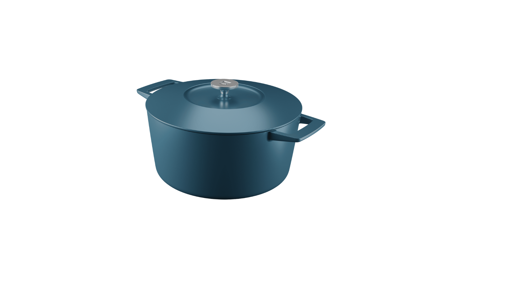
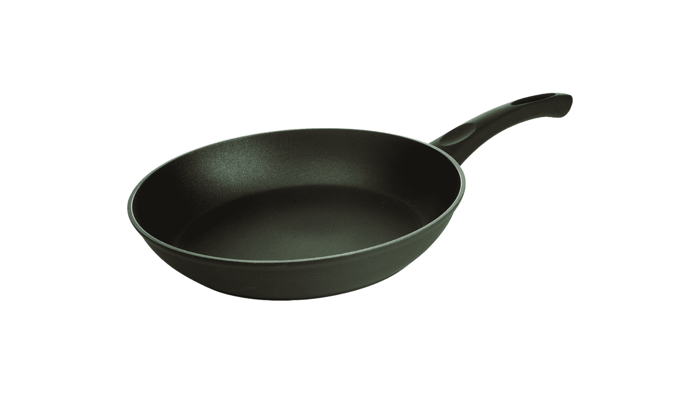
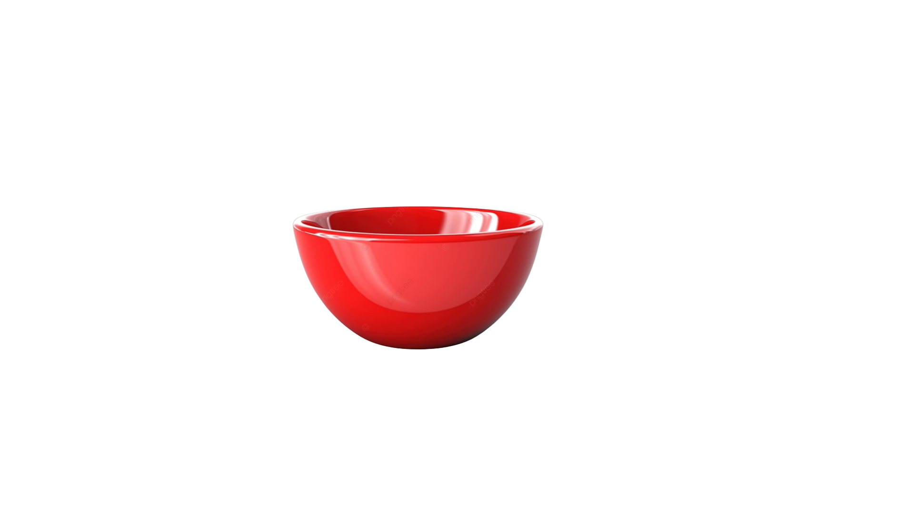
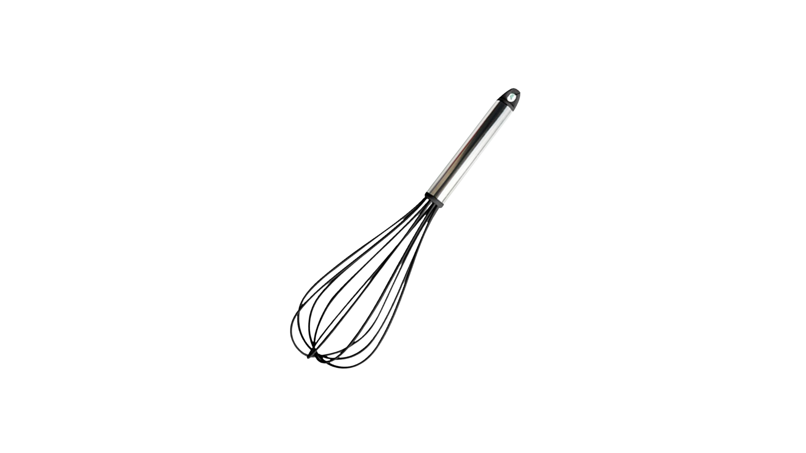

Macarrão Carbonara

Ingredientes
- 500g de espaguete (ou macarrão de sua preferência)
- 4 gemas de ovos grandes
- 150g de guanciale ou pancetta
- 150g de queijo pecorino romano ralado (pode ser parmesão)
- Pimenta do reino preta moída na hora
- Sal a gosto
Utensílios

Panela Grande

Frigideira

Tigela Grande

Batedor de Arame
Ao clicar em comprar você será redirecionado para o site da Amazon.com.br
Modo de Preparo
- Em uma panela grande, ferva água com sal para cozinhar o macarrão.
- Corte o guanciale (ou a pancetta) em cubos pequenos.
- Em uma frigideira grande, cozinhe o guanciale em fogo médio até que fique crocante e solte a própria gordura. Retire o guanciale, mas deixe a gordura na frigideira. Reserve.
- Enquanto o macarrão cozinha, em uma tigela, bata as gemas de ovos com o queijo ralado e bastante pimenta do reino. Reserve.
- Cozinhe o macarrão até ficar al dente. Antes de escorrer, reserve uma xícara da água do cozimento.
- Escorra o macarrão e transfira-o imediatamente para a frigideira com a gordura do guanciale. Misture bem para envolver.
- Retire a frigideira do fogo. Adicione a mistura de ovos e queijo sobre o macarrão, mexendo rapidamente e sem parar. O calor do macarrão irá cozinhar a gema e formar o creme.
- Se a mistura estiver muito espessa, adicione um pouco da água do cozimento reservada, uma colher de cada vez, até atingir a consistência desejada.
- Adicione o guanciale crocante por cima. Sirva imediatamente, com um pouco mais de queijo e pimenta do reino.
- Bom apetite!